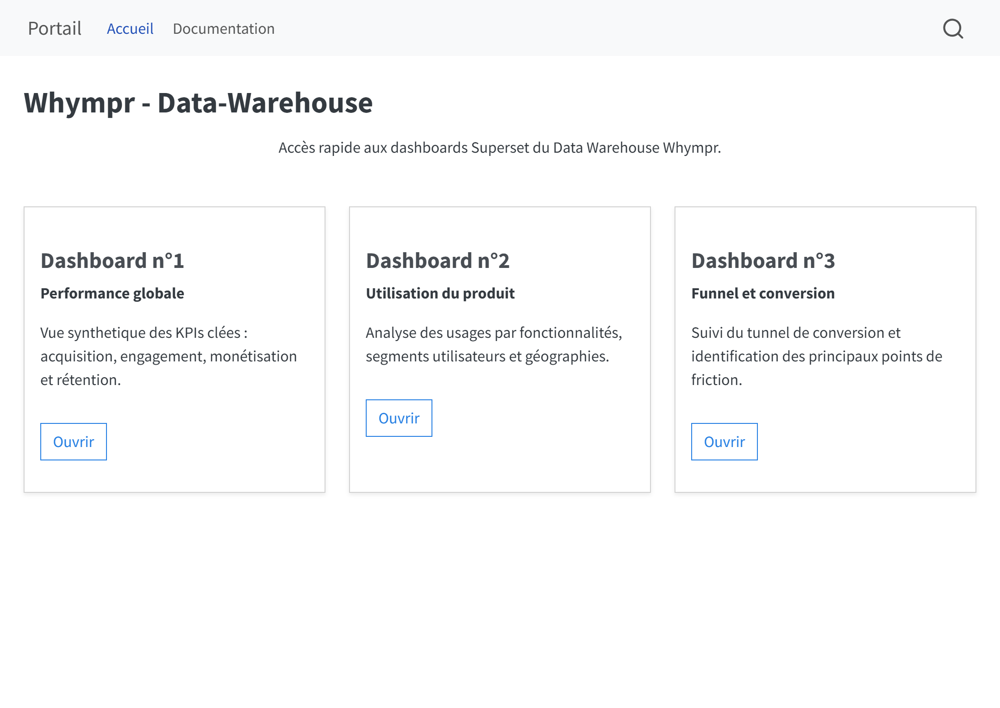
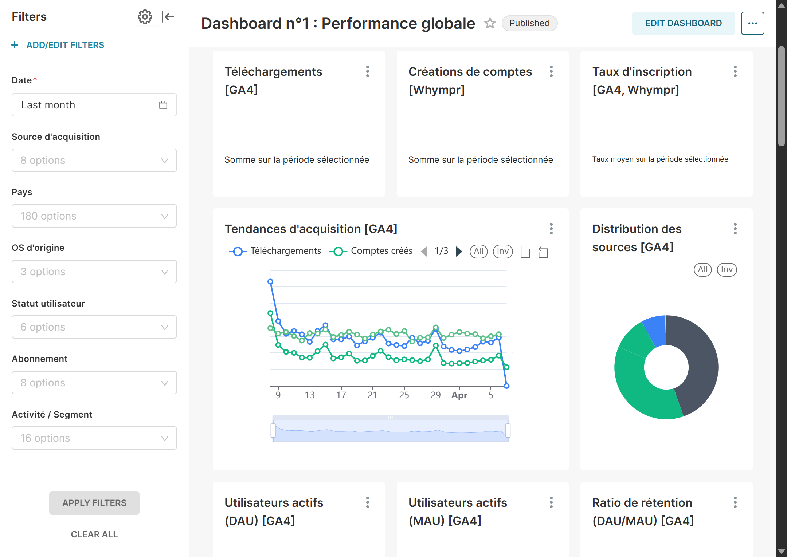

flowchart LR
subgraph ingest[Ingestion]
GA4[GA4 via BigQuery]
RCs3[RevenueCat via S3]
W[Whympr BDD]
RCapi[RevenueCat via API]
end
subgraph transform[Transformation]
Py[Python]
dbt[dbt avec DuckDB]
end
subgraph deliver[Livraison]
SS[Superset]
Q[Quarto]
end
GA4 --> Py
RCs3 --> Py
W --> Py
RCapi --> Py
Py --> dbt
dbt --> SS
dbt --> Q
Quand le même KPI raconte trois histoires : un data warehouse pour arbitrer produit et business
Case study : entrepôt DuckDB et dbt, quatre sources, trois dashboards Superset, CI/CD et estimation de volumétrie - pour une seule définition auditée des métriques.
Mots clés
case study, Data Warehouse, Analytics Engineering, dbt, DuckDB, Superset, Docker, GitHub Actions, GA4, RevenueCat, tests de données, volumétrie
Problématique : les données des applications Whympr et Iphigénie sont actuellement silotées entre trois sources distinctes (RevenueCat, PostgreSQL et Google Analytics), ce qui empêche d’obtenir une vision à 360° de l’utilisateur. Cette fragmentation rend impossible l’analyse précise des comportements qui favorisent l’abonnement ou, à l’inverse, des signaux faibles qui précèdent le désabonnement.
Solution : la mise en place d’un data warehouse centralisé permettra de réconcilier l’ensemble des données via un identifiant unique pour produire des dashboards “cross-source”. L’objectif est d’identifier les fonctionnalités à forte valeur ajoutée, de segmenter finement les abonnés par pratique outdoor et de comprendre les corrélations entre l’usage du produit et la rétention longue durée.
Moyen : le projet repose sur une infrastructure déployée sur DigitalOcean utilisant un système de gestion de base de données pour consolider les flux. La réalisation s’articule autour d’un pipeline de quatre extractions orchestrées puis d’une construction dbt sur DuckDB, planifié chaque matin, afin d’alimenter des dashboards Superset avec CI/CD (qualité code, SQL, images Docker, scans) et tests data sur les règles métier.
1 Pourquoi le statu quo ne tenait plus
Le coût caché de la “bidouille” Le vrai problème n’était pas le volume de données, mais le temps perdu à essayer de les faire parler ensemble. Passer des heures à réconcilier manuellement les chiffres de RevenueCat avec ceux de Google Analytics, c’est du temps en moins pour améliorer le produit. Chaque minute passée sur un tableur Excel pour corriger des écarts est un investissement perdu.
Bâtir sur du sable Sans une base centrale, chaque équipe finit par avoir sa propre interprétation des chiffres. Entre les contraintes du RGPD et les spécificités techniques de GA4, on se retrouvait avec des décisions basées sur des intuitions ou des données floues. C’est le meilleur moyen de se tromper de direction.
Le SQL comme contrat de confiance Le but de ce warehouse est d’imposer une règle simple : un chiffre = une définition. En automatisant les tests chaque matin, on s’assure que tout le monde regarde la même réalité. On arrête l’artisanat où chacun calcule dans son coin pour passer à une véritable rigueur technique. Le code devient enfin le langage commun entre le marketing, le produit et la tech.
Cette approche met bien en avant que le projet n’est pas juste un caprice technique, mais une nécessité pour arrêter de perdre du temps.
1.1 L’envers du décor : nos choix techniques
DuckDB plutôt qu’un entrepôt cloud coûteux Pour ce volume de données, pas besoin de sortir l’artillerie lourde. DuckDB nous permet de traiter le SQL de manière ultra-rapide directement sur la machine, sans multiplier les factures SaaS. C’est un choix pragmatique : on privilégie l’efficacité et la maîtrise des coûts plutôt que de payer pour une puissance de calcul dont on n’a pas encore besoin.
dbt pour ne pas naviguer à vue On n’utilise pas dbt pour le plaisir d’écrire du code, mais pour mettre de l’ordre. Cela nous force à documenter chaque colonne et à tester automatiquement la fiabilité des données. C’est notre filet de sécurité : si un chiffre paraît bizarre dans un dashboard, on peut remonter la trace en un instant.
Python et Cron : la simplicité avant tout Plutôt que d’installer une “usine à gaz” comme Airflow pour orchestrer les tâches, on reste sur des scripts Python simples et des tâches planifiées classiques. C’est plus facile à maintenir, plus transparent en cas d’erreur, et on garde un contrôle total sur l’extraction des données.
Superset en mode versionné Nos tableaux de bord ne sont pas juste des assemblages de graphiques créés à la main. En automatisant leur configuration, on s’assure que tout reste cohérent, même si on change d’environnement. Cela évite surtout que le marketing et le produit ne finissent par regarder des chiffres différents à cause d’un mauvais filtre.
Ce qu’il faut garder en tête On ne prétend pas tout résoudre d’un coup. Avec les limites de Google Analytics, certains indicateurs resteront partiels. Notre approche est de rester honnêtes sur ces zones d’ombre : mieux vaut une donnée manquante mais bien documentée qu’un beau graphique qui raconte n’importe quoi.
2 Du fichier brut au tableau de bord : le pipeline comme un flux unique
Chaque nuit, l’ordonnanceur écrit les vérités sources attendues, puis dbt applique la progression sources → staging → clean → build → marts. Les stg_* typent et normalisent (dont fuseau Europe/Paris là où le métier l’exige) ; les int_* portent les règles intermédiaires ; les fct_* / dim_* et mart_* exposent des grains documentés - par exemple une ligne par utilisateur et par jour, ou par transaction - pour éviter les doubles comptes silencieux en aval.
On ne déploie rien à l’aveugle. Grâce à GitHub Actions, chaque modification est passée au crible : le code est nettoyé, le SQL est vérifié et les tests sont validés automatiquement. Si ce n’est pas parfait, ça ne passe pas. Avec Docker, on encapsule tout l’environnement. Que le projet tourne sur le poste d’un développeur ou sur notre serveur final, le comportement est strictement le même. On élimine les mauvaises surprises liées aux différences de configuration entre les machines. Ce projet n’est pas une simple présentation PowerPoint ; c’est une chaîne de production robuste. Si un flux plante en pleine nuit, on a les outils pour comprendre exactement ce qui s’est passé, reproduire l’erreur et la corriger rapidement. Le “runbook” (notre mode d’emploi technique) et les logs détaillés transforment un problème critique en une simple tâche de maintenance.
3 Cartographie des compétences
3.1 Data Engineer
- Orchestration des extractions : enchaînement ordonné GA4, export RevenueCat S3, Whympr (async) et mapping RevenueCat API (async), avec agrégation des erreurs et journalisation par script (contexte de log dédié, consolidation des statuts dans un résumé CSV par run).
- Couche transformation : module
src.transformqui exécutedbt buildavec sortie journalisée ligne à ligne et la même traçabilité d’exécution que les extracts. - Paramétrage dbt et moteur analytique : couches
staging/clean/build/marts, matérialisations adaptées au volume (dont staging incrémental, marts en table) et hookson-run-startpour fixer mémoire DuckDB, répertoires temporaires et comportements de session de façon reproductible. - Connecteurs modulaires : extractions et connecteurs découpés (
src/extract,src/connectors) pour limiter le couplage entre sources GA4, S3, base applicative et API. - SQL pipeline : modèles d’ingestion et intermédiaires s’appuyant sur CTE multi-étages, fonctions de fenêtre et déduplication déterministe pour alimenter les couches aval.
3.2 Analytics Engineer
- Modélisation analytique versionnée : conventions
stg_*/int_*/fct_*/dim_*, grain explicite avant jointures sensibles, descriptions de colonnes critiques et lecture du DAG dbt pour l’audit des dépendances. - Règles métier en code : macros réutilisables (catégories d’événements, source d’acquisition, flags d’activité) alignées sur des
varscentralisées dans le projet dbt. - Contrats de qualité sur les marts : tests génériques dbt (
not_null,unique,relationships,accepted_values, etc.) complétés par des tests SQL dédiés (bornes KPI, cohérence entre indicateurs liés). - BI as code : automation Superset versionnée pour les dashboards D1–D2–D3 (charts et métadonnées pilotés par code dans le dépôt plutôt que par configuration manuelle seule).
- Gouvernance de l’exposition : génération d’inventaires / matrices d’audit sur les filtres et métriques exposées, et tests de non-régression ciblés pour éviter les régressions silencieuses côté consommation.
3.3 DevOps et livraison
- Runtime conteneurisé : trois images Docker (ordonnanceur batch, Superset, reverse proxy / gateway) assemblées via un fichier Compose dédié à la stack VM.
- Pipeline quotidien opérationnel : enchaînement extract → transform piloté par script, variables pour surcharger les commandes (
PIPELINE_EXTRACT_CMD,PIPELINE_TRANSFORM_CMD), génération d’un index ops Quarto à partir des journaux, et ajustement des permissions sur le fichier DuckDB pour le service BI. - CI qualité code et SQL : workflow GitHub Actions avec
uv, verrouuv.lock,deptry,sqlfluff,ruff(format + lint),pytest,dbt depsetdbt parse, hooks dbt-checkpoint (descriptions, fichiers de propriétés, tests sur sources et modèles), interdiction des marqueurs TODO/FIXME et contrôle d’arbre git propre après exécution. - CI images et intégration : Hadolint sur les Dockerfiles, contrôle de syntaxe bash, build sans cache des trois images, exécution de
pytestdans le conteneur scheduler, smoke tests d’import de l’automation Superset, montéedocker composeavec attente des healthchecks et test HTTP du gateway, scans Trivy et Grype (vulnérabilités en informatif, scan de secrets bloquant sur le filesystem et les images). - Livraison sur VM : workflow de build, export des images (
docker save) et déploiement par synchronisation SSH/SCP vers la machine cible (chemin paramétrable côté dépôt). - Ops et runbook : documentation VM, planification cron, contrôle de santé des services et gestion des secrets pour une exploitation reproductible et une remise à niveau d’incident claire.
3.4 Data Scientist / Analytics Scientist
- Cadre de mesure KPI : formalisation des indicateurs acquisition/engagement/rétention/monétisation avec définitions réutilisables.
- Rigueur statistique appliquée : tests métier explicites sur fenêtres temporelles (30 jours lifecycle, 90 jours churn) et bornes de cohérence des métriques.
- Fiabilisation des métriques : vérification systématique de la sensibilité des KPI aux changements de périmètre, aux retards de collecte et aux artefacts de tracking.
- Analyse des limites de validité : documentation des biais structurels (GA4 thresholding, RGPD, Stripe Web incomplet) pour éviter les décisions sur indicateurs hors périmètre.
- Activation décisionnelle : traduction des définitions métier et des modèles en tableaux de bord opérationnels pour le marketing, le produit et la direction.
4 Si c’était à refaire
- Observabilité unifiée : corréler extract, dbt et Superset dans une seule vue temporelle (métriques OpenTelemetry ou équivalent) au-delà des logs et du CSV de bilan.
- Orchestrateur : si l’équipe data grossit ou si les dépendances inter-pipelines se multiplient, réévaluer Airflow / Dagster avec le coût d’exploitation assumé.
5 En images


6 Lien vers le projet
Code et données sensibles : environnement propriétaire. Cet article reflète l’architecture et les pratiques du dépôt de référence ; les captures illustrent les livrables dashboards.